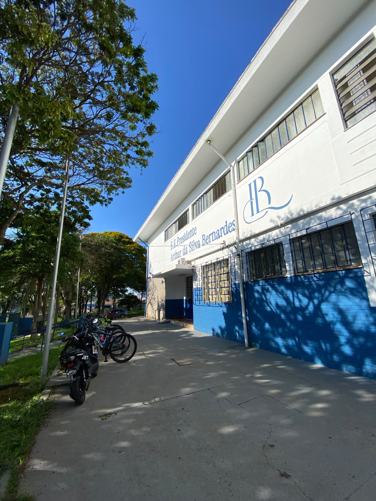
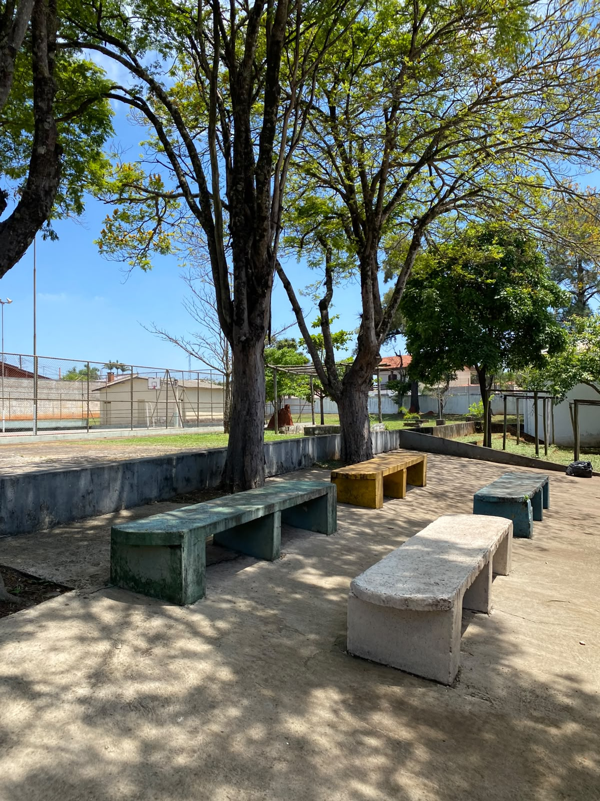
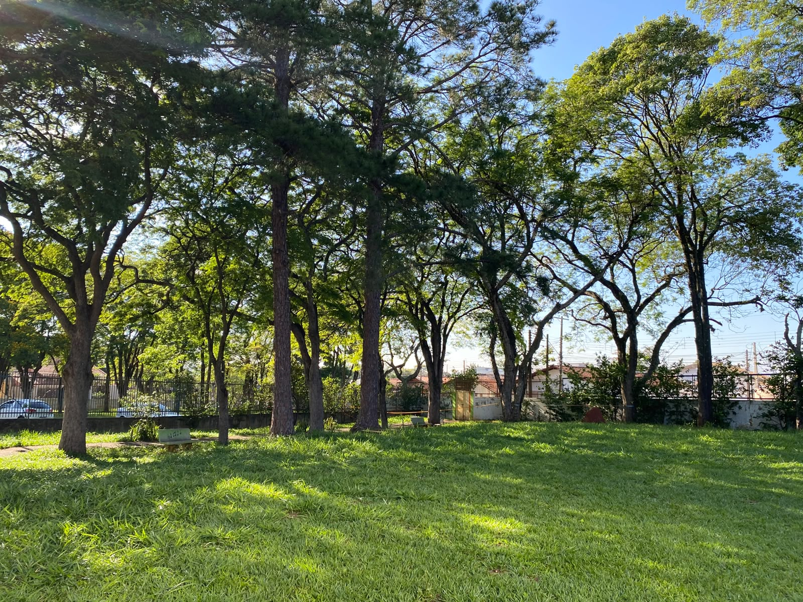
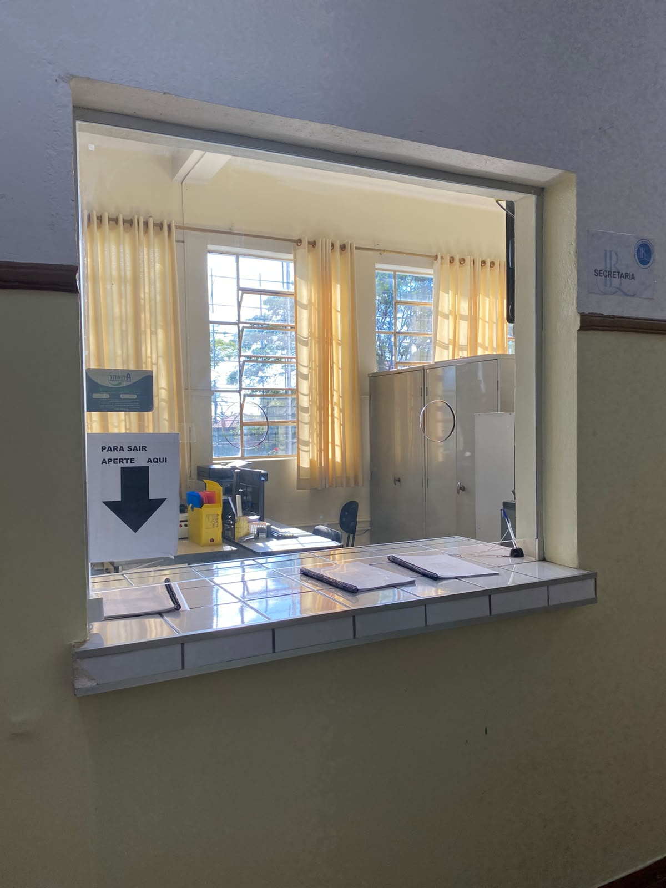
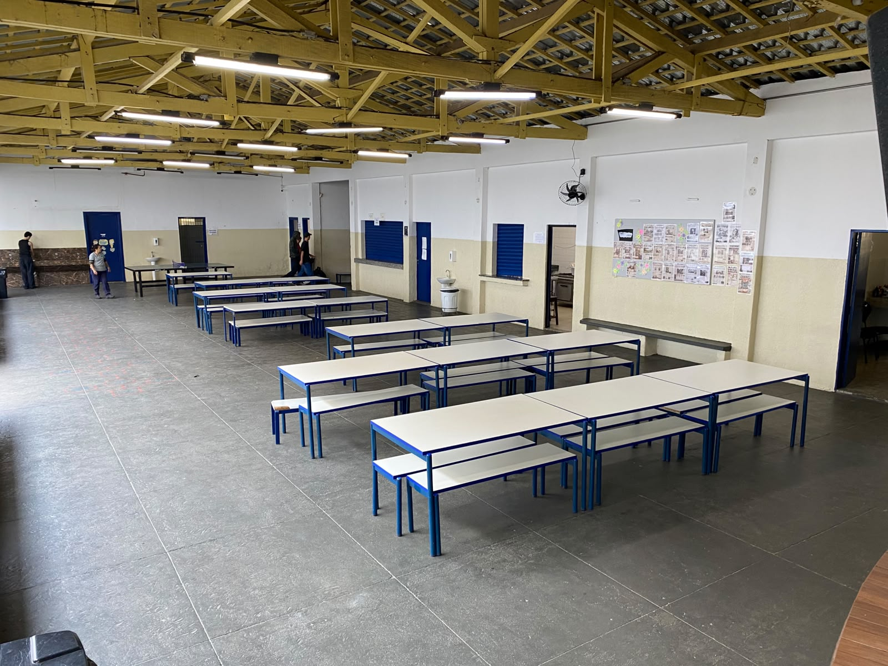
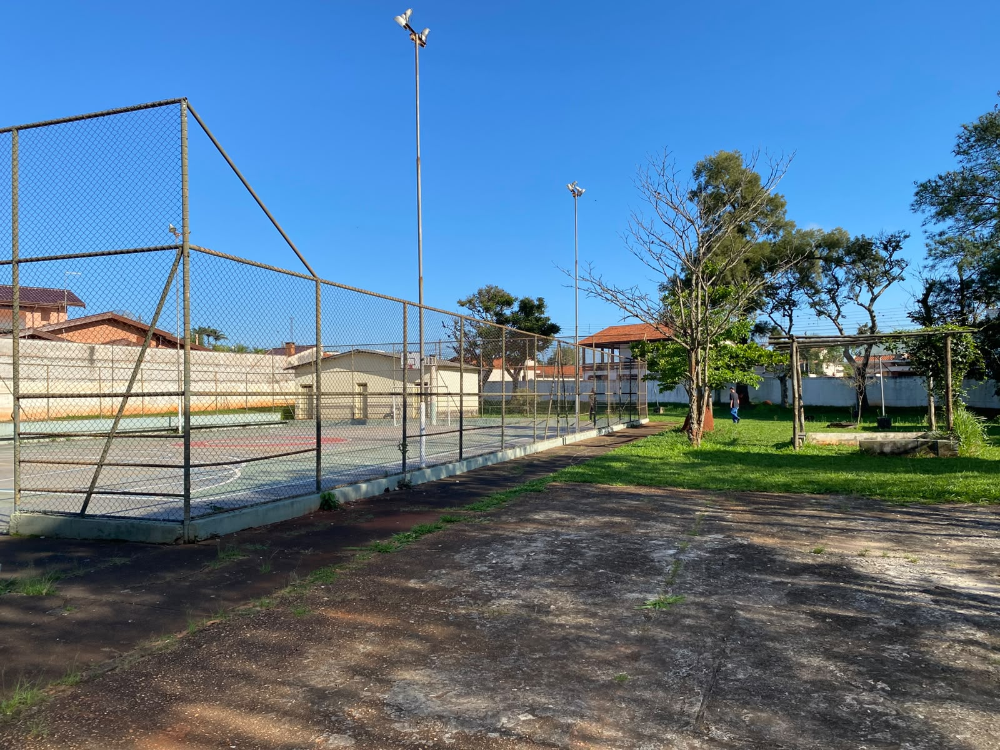
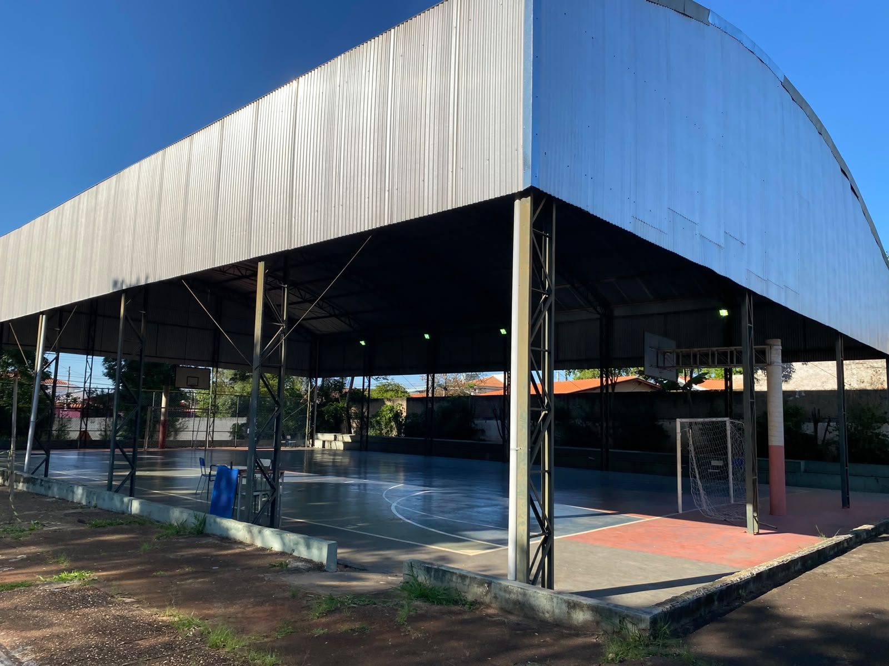
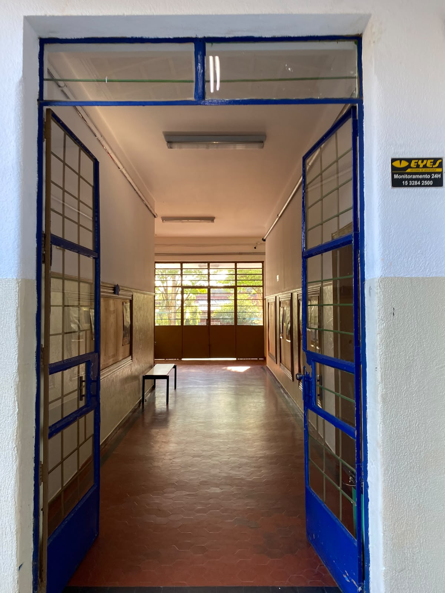

Nossa comunidade
A Escola
Conheça alguns dos espaços da Escola Estadual Presidente Arthur da Silva Bernardes.
Espaços da escola
As imagens abaixo mostram alguns ambientes da nossa escola.







